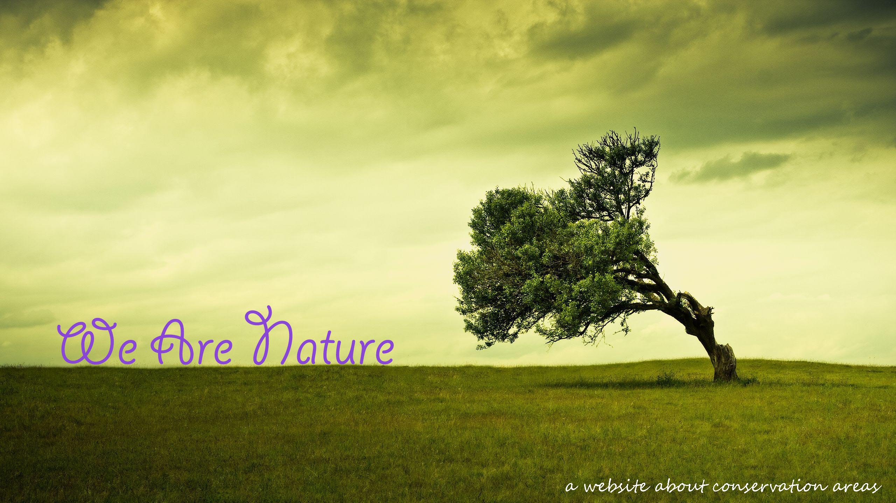

Website about how to protect the primary forests
Content
- Primary forests pages
- Conversation and protection of Canada forests
- The best way to protect the forests way
- Ten things you can do to save forests
- The forest protection way in wiki
- Toronto star: save the forests, save the worlds!

Protecting Forests
Forests are crucial for the health and well-being of people, wildlife, and our planet. They’re home to roughly two-thirds of all land-dwelling plant and animal species, critical lifelines for communities big and small, and one of the last lines of defense against catastrophic climate change.Decades of exploitation have destroyed and degraded much of the Earth’s natural forests. In fact, we’ve already lost half of global forest land. Losing these vital ecosystems is displacing communities, threatening the habitats of rare and endangered species, and spewing greenhouse gases into the atmosphere. To avoid further consequences, we urgently need to protect what is left.
The good news is that solutions to deforestation exist. Together, we have the power to save our forests.
Speaking Out for Forest Protection Right now, activists from all around the world are being threatened by governments, corporations and, other private interests that want to stop all criticism of irresponsible environmental practices. Brave individuals like Berta Cáceres and many more continue to pay the highest price while forests remain in danger.
We will not be silenced.
Greenpeace itself is under a multi-million legal and public relations attack by Resolute Fores Products because we will continue to call for the protection of the Great Northern Forest. Learn more about this case.
Why Fight for Forests? We fight for forests because life as we know it simply could not continue without them.
Around 1.6 billion people worldwide rely on forests for food and economic means. Deforestation can have devastating impacts for the indigenous peoples and forest-dependent communities that have traditionally stewarded these lands. Beyond the borders of the forest, we all rely on forests for things like clean water, timber, medicines, and products we use every day.
Similarly, forests are home to an incredible diversity of plant and animal life whose habits are under threat from deforestation. For instance, one in ten species on Earth known to humans is only found in the Amazon rainforest.
Finally, the fight for forests is fundamentally tied to another critical global challenge: global warming. In fact, forest loss is actual a double-edged sword when it comes to our changing climate. Deforestation contributes as much as 20 percent of global greenhouse gas emissions every year, while intact forests can actually absorb carbon dioxide in the atmosphere.
Fighting for a Deforestation-Free Future Greenpeace is campaigning for a future that will allow our forests to thrive. We envision a world where our forests sustain local communities and economies, are filled with unique wildlife, and keep our air clean and pollution-free.
Does that sound like a world you want to live in? Great! Learn more about the ways we’re fighting to protect forests around the world and how you can get involved.
Photoes and information retrieved from(credit to): Protect areas;Asilia;Elora; Rhett Butler;Rio Wiki;Wikipedia;
back to index